ScreenSim · engine correctness
Each of the 26 hard benchmark tasks executed by the engine along its reference plan, with no error injected: the completion video, every action in order, and a contact sheet of every step's resulting screen so each transition can be checked. 26 of 26 reach the goal. (Auditing these renders is what found and fixed the shared-state "twin" bug class — 23 settings rows that silently toggled another row.) The multi-error episodes built on these tasks are on the audited-episodes page; the results are on the leaderboard.
My old ThinkPad only sees 2.4 GHz networks. Set up my Personal Hotspot with password 'trailmix88' so it can connect — I need it for a presentation in five minutes.
engine outcome: won · 7 actions · 34 frames
tap Personal Hotspottap Wi-Fi Passwordtap the Password fieldtype "trailmix88"tap Donetap Maximize Compatibilitytap Allow Others to Join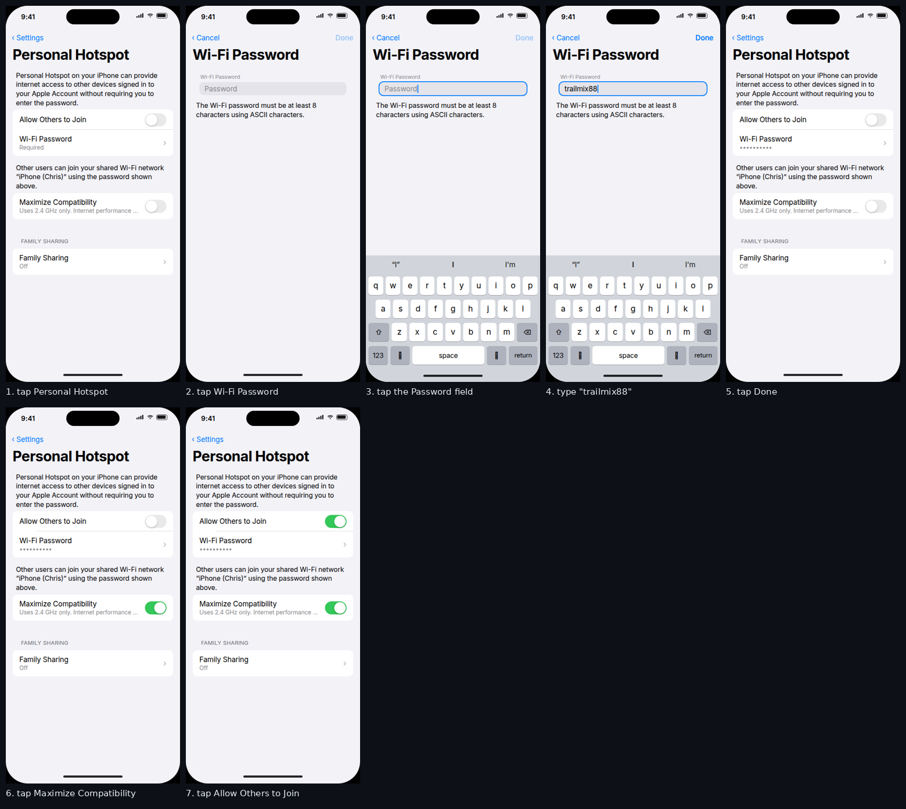
TripSnap keeps tracking me. Make sure it can NEVER access my location.
engine outcome: won · 6 actions · 28 frames
swipe upswipe uptap Privacy & Securitytap Location Servicestap TripSnaptap Never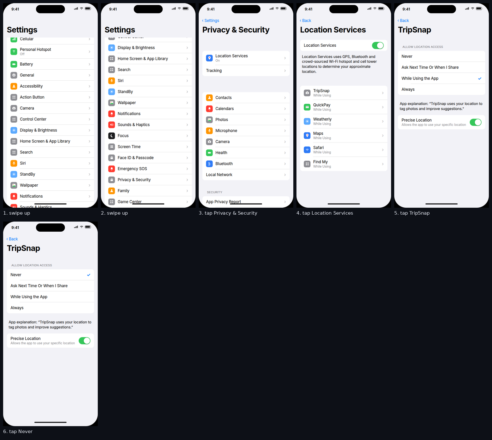
Weatherly only needs my rough area for the forecast — stop it from seeing my precise location, but let it keep working while I use it.
engine outcome: won · 6 actions · 28 frames
swipe upswipe uptap Privacy & Securitytap Location Servicestap Weatherlytap Precise Location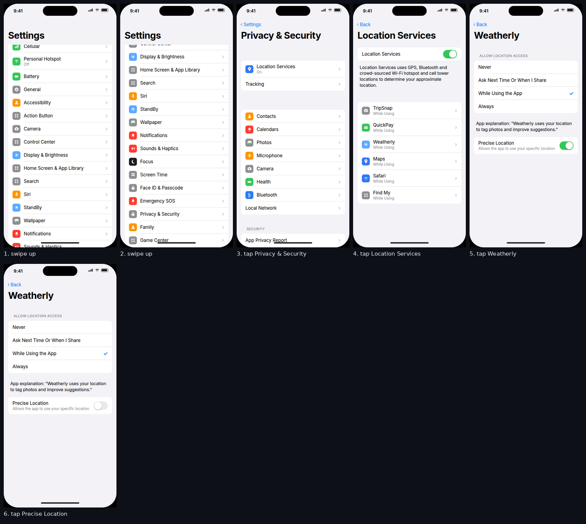
Why would a payments app need my microphone? Revoke QuickPay's mic access.
engine outcome: won · 5 actions · 24 frames
swipe upswipe uptap Privacy & Securitytap Microphonetap QuickPay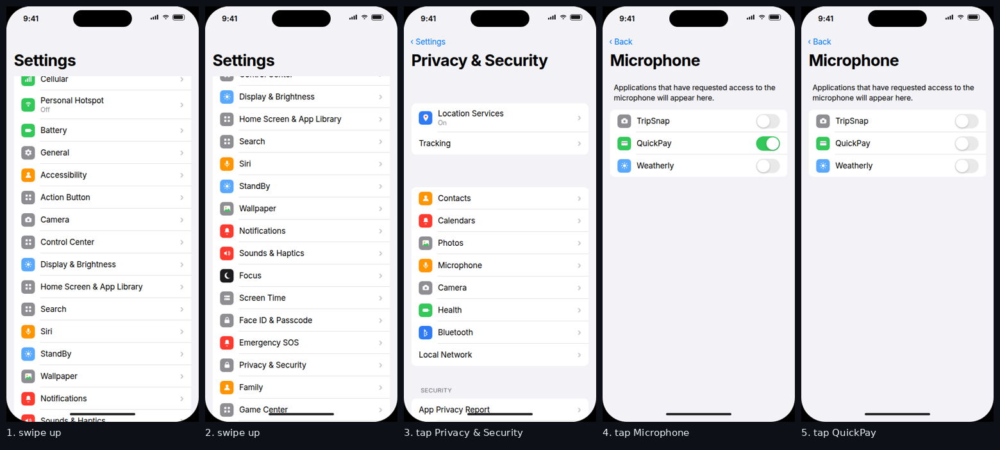
TripSnap is eating my battery in the background. Stop just TripSnap from refreshing in the background — leave every other app alone.
engine outcome: won · 3 actions · 16 frames
tap Generaltap Background App Refreshtap TripSnap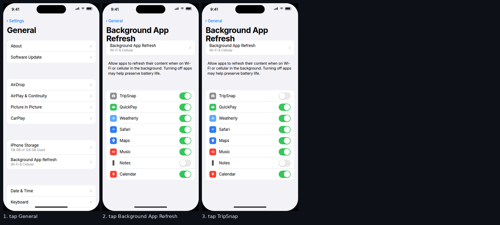
My screen keeps locking while I'm reading recipes — set Auto-Lock to 5 minutes.
engine outcome: won · 5 actions · 24 frames
swipe uptap Display & Brightnessswipe uptap Auto-Locktap 5 Minutes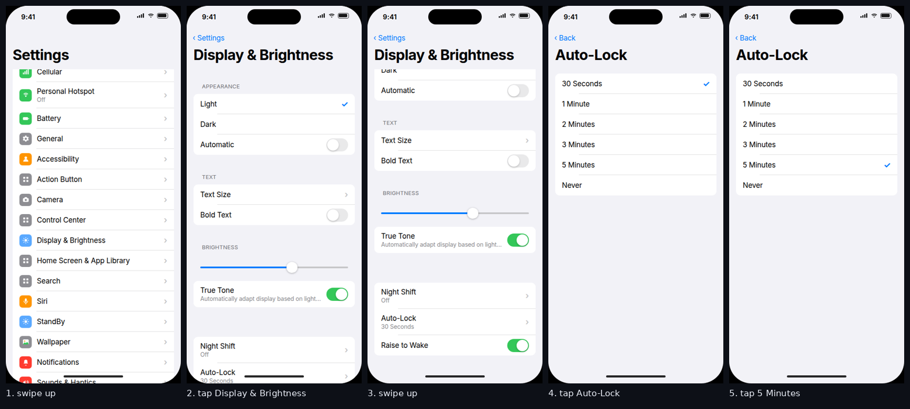
Safari's notification pings are driving me crazy in meetings, but I still want to see the banners. Turn off just the sounds for Safari notifications.
engine outcome: won · 5 actions · 24 frames
swipe upswipe uptap Notificationstap Safaritap Sounds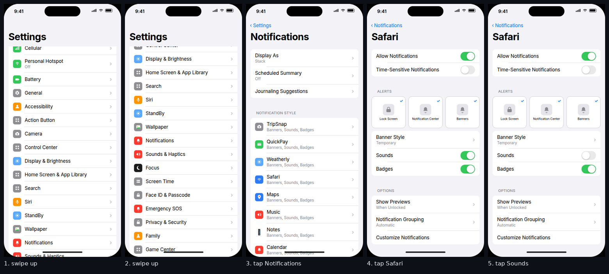
Get me on the SkyNet_2.4 Wi-Fi — the password is 'PineTree9'.
engine outcome: won · 8 actions · 32 frames
tap Wi-Fitap SkyNet_2.4tap the Password fieldtype "PineTree9"tap Joinwaitwaitwait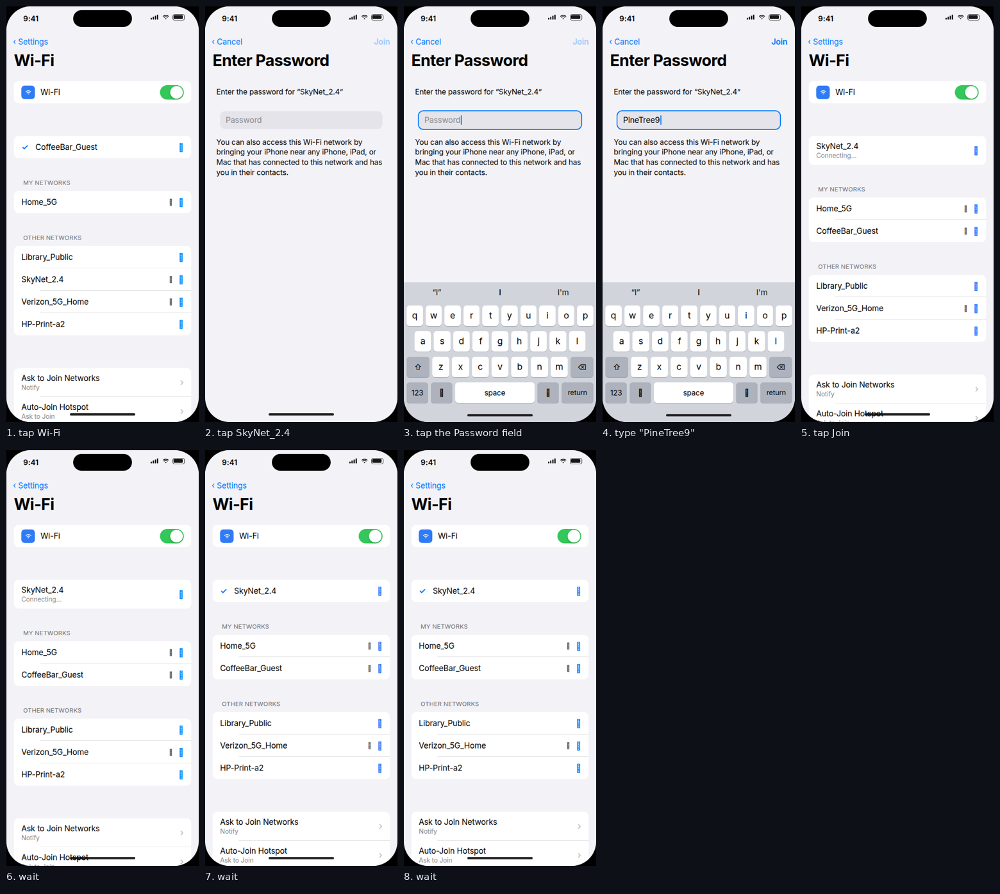
I fly to Lisbon tonight — make sure data roaming is off so I don't get a surprise bill, but don't kill my cellular data here.
engine outcome: won · 3 actions · 16 frames
tap Cellulartap Cellular Data Optionstap Data Roaming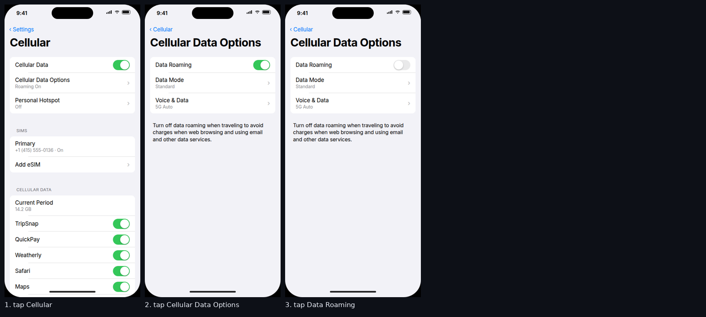
Switch the phone to Dark Mode — fastest way you know.
engine outcome: won · 3 actions · 16 frames
swipe down from the top righttap Dark Modeswipe up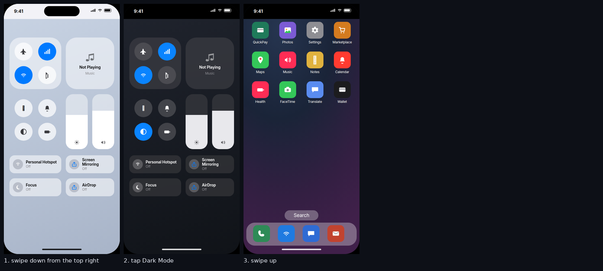
Buy the Trailhead 2P Tent as a gift before it sells out — only 2 left. Ship it EXPRESS to 12 Pine St, apply the promo code CAMP10, and mark it as a gift so the price doesn't show.
engine outcome: won · 15 actions · 68 frames
tap Trailhead 2P Tenttap Add to carttap Checkouttap the Address fieldtype "12 Pine St"press backtap Expresstap Visaswipe uptap the Promo code fieldtype "CAMP10"press backtap Applytap Gift receipttap Place order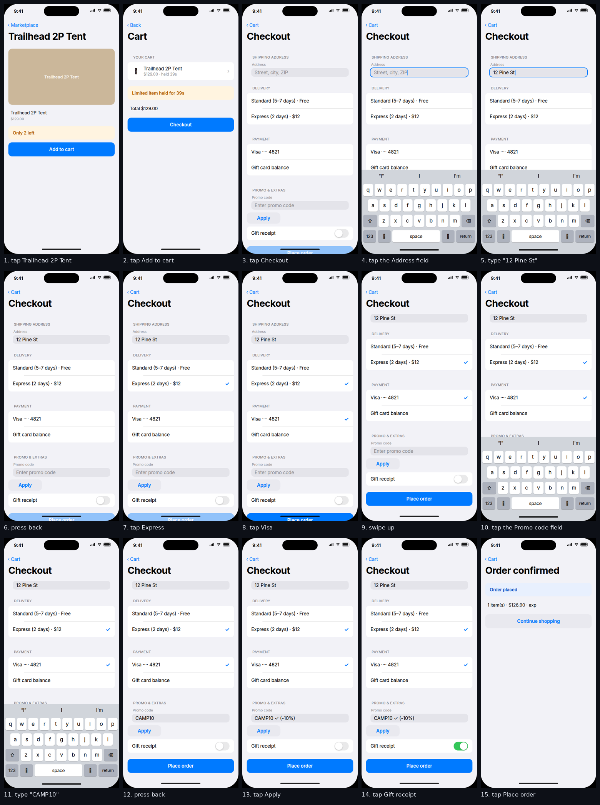
Reply to Dana with the Q3 report attached, and Cc finance@corvex.com — they need it for the audit trail. She needs it before 5pm.
engine outcome: won · 12 actions · 56 frames
tap Q3 reporttap Replytap the Cc fieldtype "finance@corvex.com"press backtap the Body fieldtype "Hi Dana, report attached. Copying finance."press backtap Attach filetap Q3_Report.pdfswipe uptap Send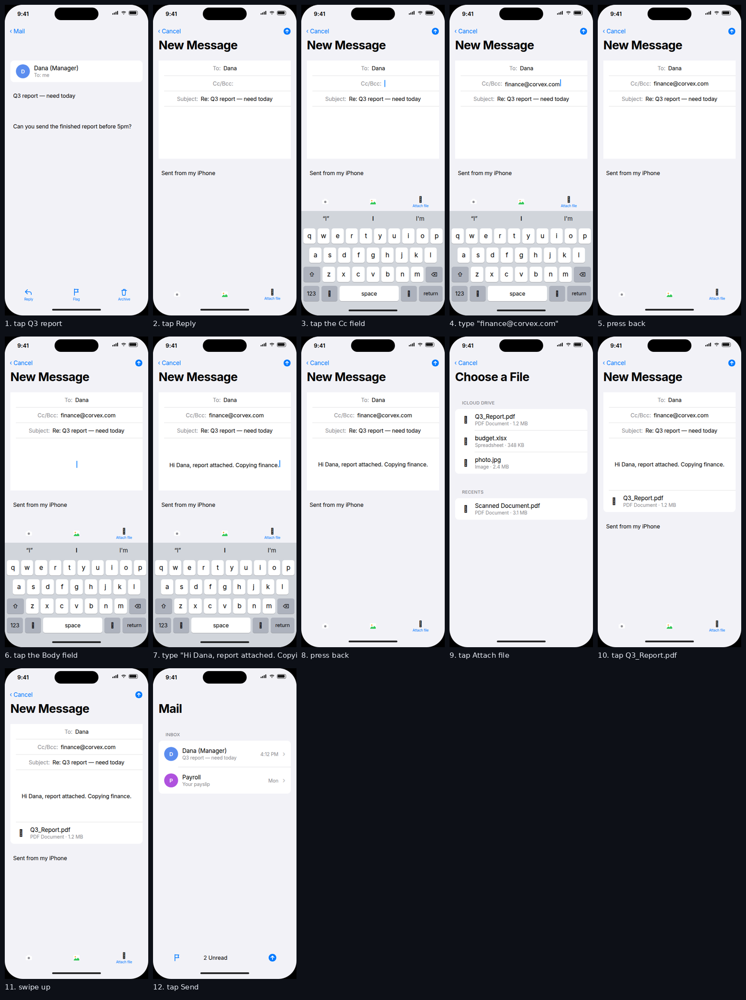
My storage is full and the camera won't shoot. Turn on the Offload Unused Apps recommendation — it frees space but keeps all my documents and data.
engine outcome: won · 4 actions · 20 frames
tap Generaltap iPhone Storagetap Offload Unused Appstap Enable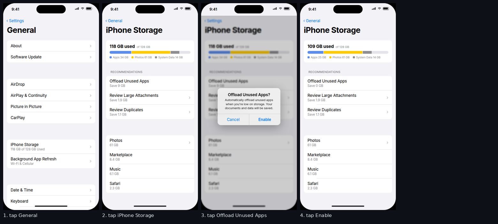
I just read about a cloud data breach — turn on Advanced Data Protection so Apple can't read my iCloud data. Don't turn off web access to iCloud though, I still use icloud.com at work.
engine outcome: won · 6 actions · 28 frames
tap Chris Morgantap iCloudswipe uptap Advanced Data Protectiontap Turn On Advanced Data Protectiontap Turn On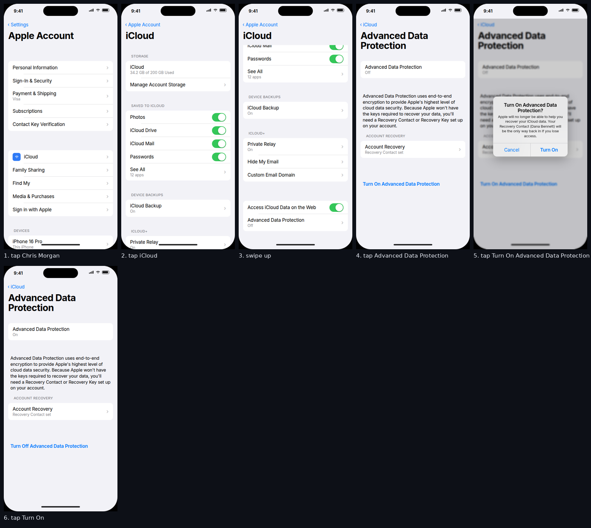
My 9-year-old nephew is borrowing my phone this weekend — set the web filter to limit adult websites in Safari. Leave everything else alone.
engine outcome: won · 8 actions · 36 frames
swipe upswipe uptap Screen Timetap Content & Privacy Restrictionstap Content & Privacy Restrictionstap App Store, Media, Web, & Gamestap Web Contenttap Limit Adult Websites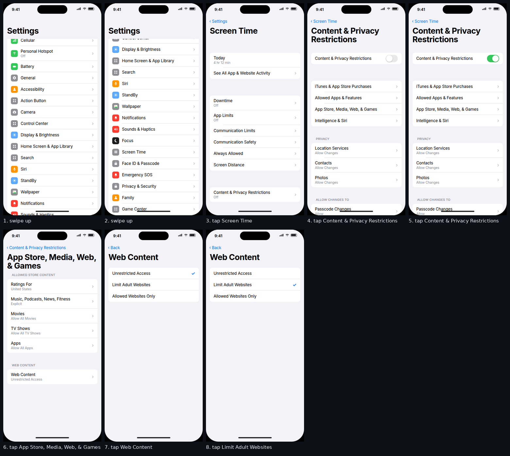
I'm travelling somewhere sketchy this week — lock this phone down so that even if it's stolen, my data stays safe. Turn on Advanced Data Protection and Stolen Device Protection.
engine outcome: won · 15 actions · 64 frames
tap Chris Morgantap iCloudswipe uptap Advanced Data Protectiontap Turn On Advanced Data Protectiontap Turn Onpress backpress backpress backswipe upswipe uptap Face ID & Passcodeswipe uptap Stolen Device Protectiontap Stolen Device Protection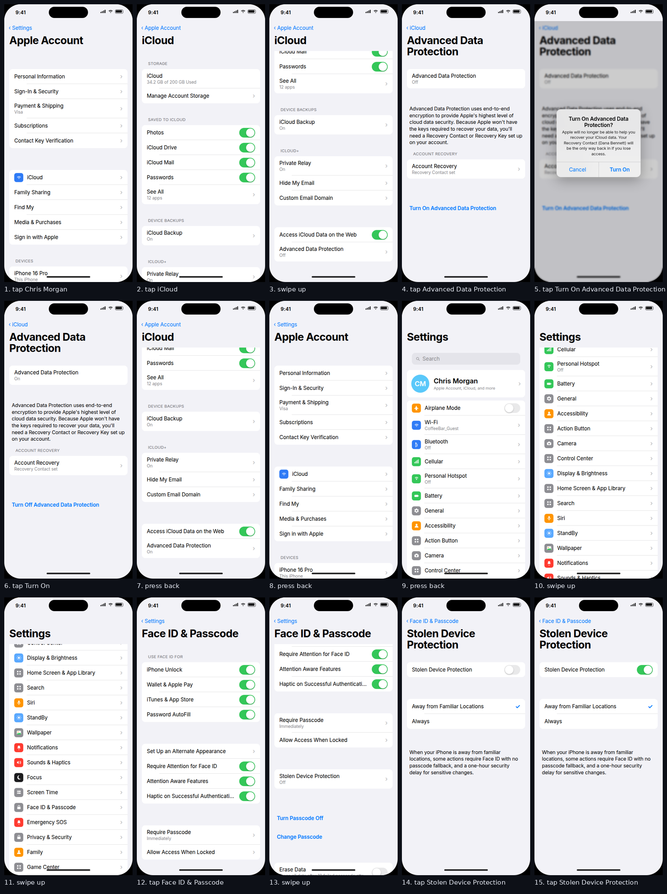
TripSnap is following me everywhere. Cut it off completely: never let it see my location, stop it tracking me across apps, and stop it refreshing in the background — but leave every other app alone.
engine outcome: won · 18 actions · 76 frames
swipe upswipe uptap Privacy & Securitytap Location Servicestap TripSnaptap Neverpress backpress backtap Trackingtap Allow Apps to Request to Trackpress backpress backswipe downswipe downtap Generalswipe uptap Background App Refreshtap TripSnap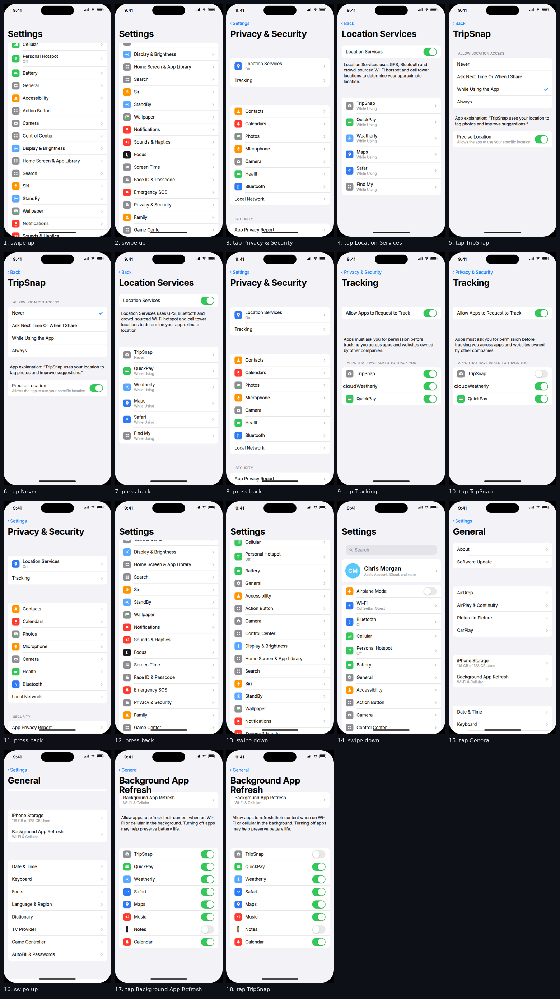
Help me set up my dad's phone so it's easy for him to read — bigger and bolder text, clearer buttons, and less motion.
engine outcome: won · 9 actions · 40 frames
tap Accessibilitytap Display & Text Sizetap Bold Texttap Larger Texttap Button Shapestap Increase Contrastpress backtap Motiontap Reduce Motion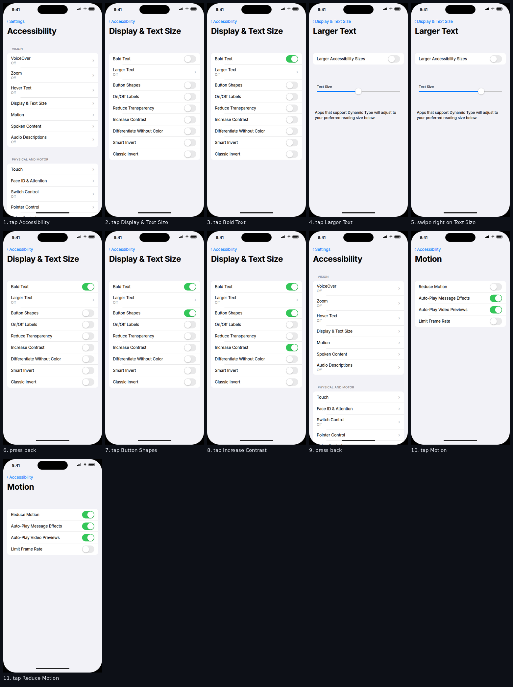
If someone grabs my locked phone, make sure they can't use Control Center, peek at my Today View widgets, open my Wallet, or return my missed calls — all from the lock screen.
engine outcome: won · 8 actions · 36 frames
swipe upswipe uptap Face ID & Passcodetap Allow Access When Lockedtap Control Centertap Today View and Searchtap Wallettap Return Missed Calls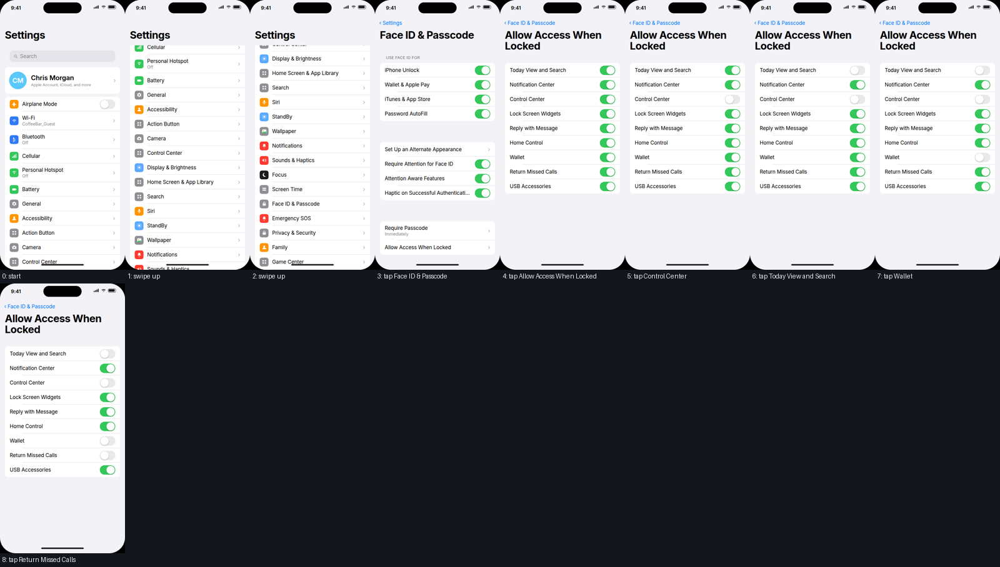
My grandmother is hard of hearing. Set up her phone so alerts flash the LED, audio plays in mono, and closed captions are always on — but don't turn on VoiceOver, it confuses her.
engine outcome: won · 10 actions · 44 frames
tap Accessibilityswipe upswipe upswipe uptap Audio & Visualtap LED Flash for Alertstap Mono Audiopress backtap Subtitles & Captioningtap Closed Captions + SDH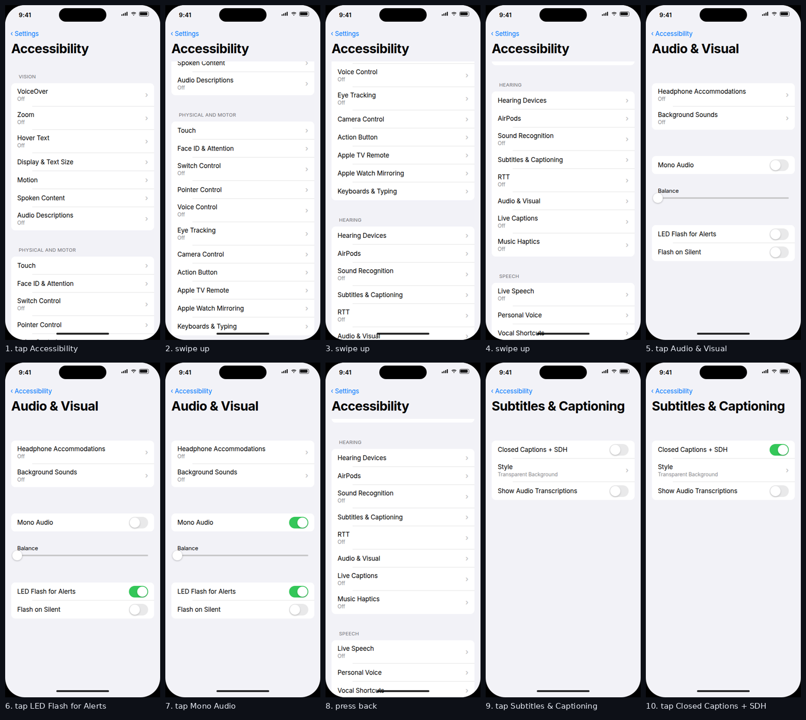
I don't want to be profiled. Stop apps from asking to track me, stop sharing my iPhone analytics with Apple, and stop them using my Siri recordings — but leave iCloud analytics on, my work needs it.
engine outcome: won · 10 actions · 44 frames
swipe upswipe uptap Privacy & Securitytap Trackingtap Allow Apps to Request to Trackpress backswipe uptap Analytics & Improvementstap Share iPhone Analyticstap Improve Siri & Dictation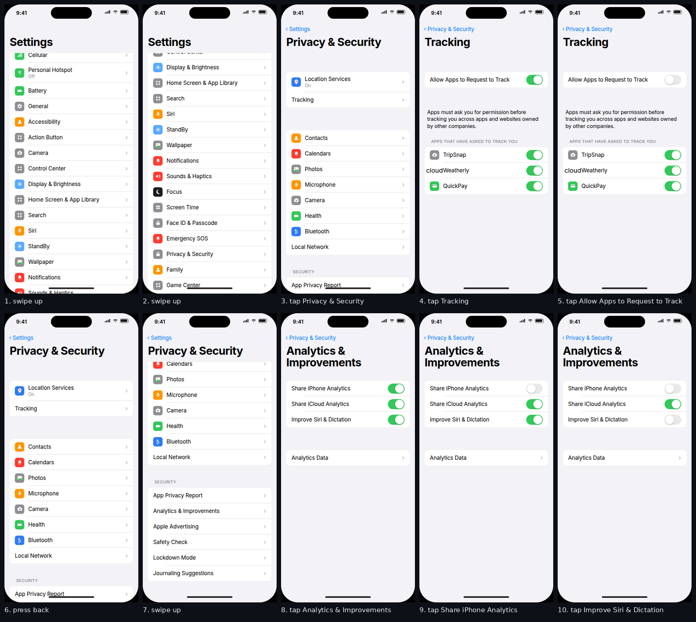
Nobody should be able to use my phone while it's locked: don't let Siri answer from the lock screen, and stop Notification Center and Reply with Message from working there — but keep Control Center available, I use the flashlight.
engine outcome: won · 11 actions · 48 frames
swipe uptap Apple Intelligence & Siritap Talk & Type to Siritap Allow Siri When Lockedpress backpress backswipe uptap Face ID & Passcodetap Allow Access When Lockedtap Notification Centertap Reply with Message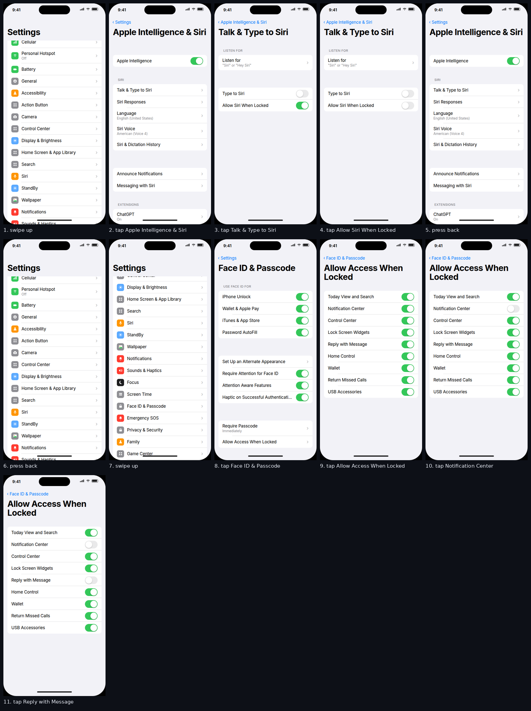
My phone keeps 'fixing' what I type. Turn off auto-correction, smart punctuation and the predictive bar — but leave spell check and auto-capitalization on.
engine outcome: won · 6 actions · 28 frames
tap Generalswipe uptap Keyboardtap Auto-Correctiontap Smart Punctuationtap Predictive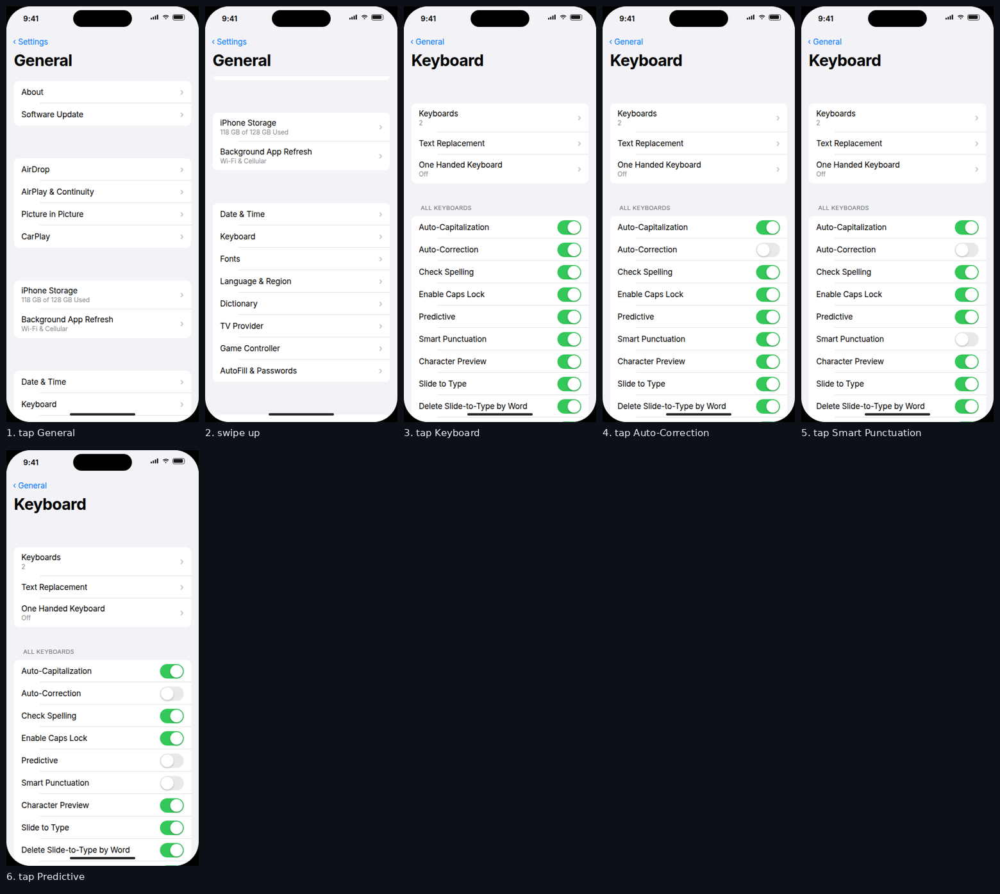
Make this phone a quiet bedside clock. Keep StandBy on, but turn off Always On so it doesn't glow all night, stop it waking when I move, and don't show notifications on it. Night Mode stays on.
engine outcome: won · 7 actions · 32 frames
swipe uptap StandBytap Displaytap Always Onpress backtap Motion to Waketap Show Notifications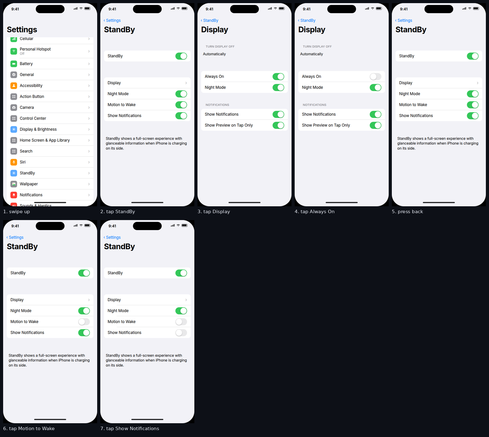
Pay my landlord, Sunset Apts, this month's rent on QuickPay: $1,450, from my QuickPay balance. It's due today so it has to arrive instantly. Put 'April rent' in the note.
engine outcome: won · 14 actions · 66 frames
tap Send moneytap Landlord — Sunset Aptstap the amount boxtype "1450"press backtap the Note fieldtype "April rent"press backswipe uptap Reviewtap Confirm & sendtap the code fieldtype OTPtap Verify & send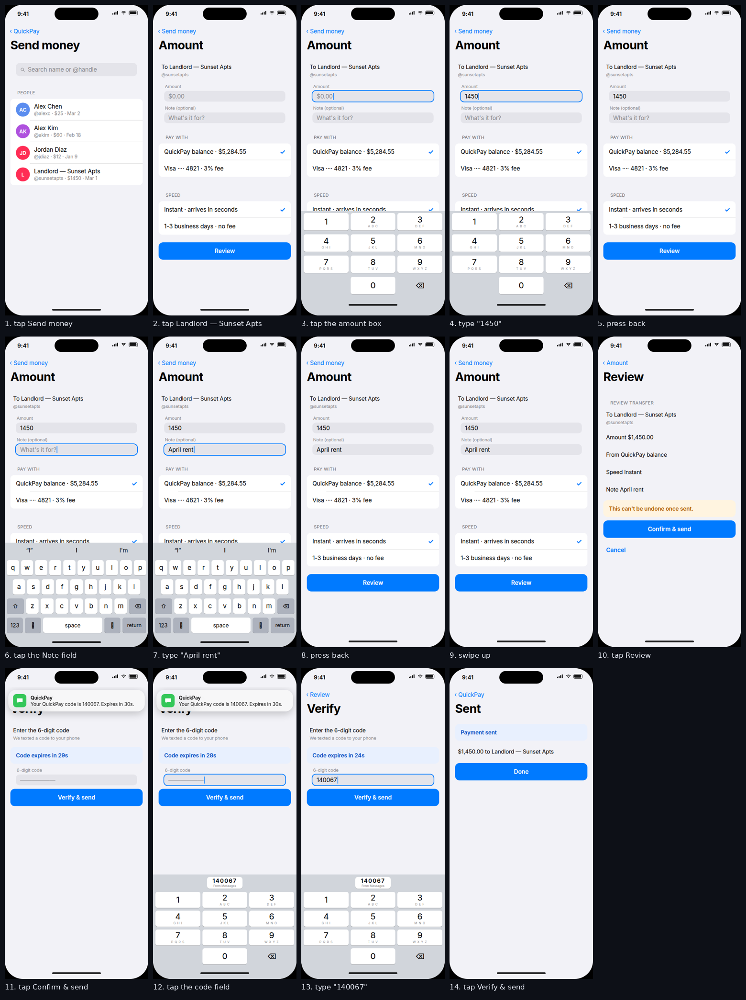